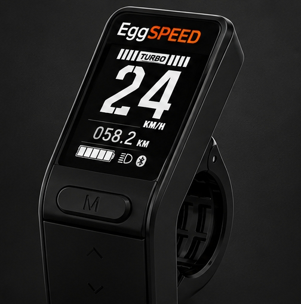
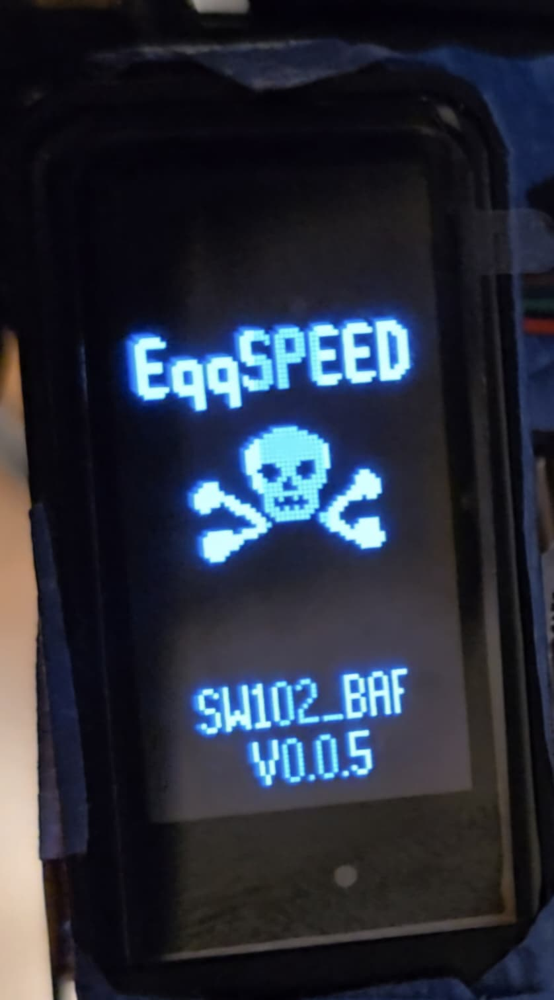
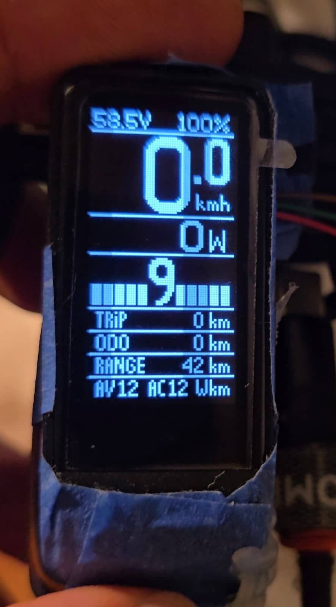
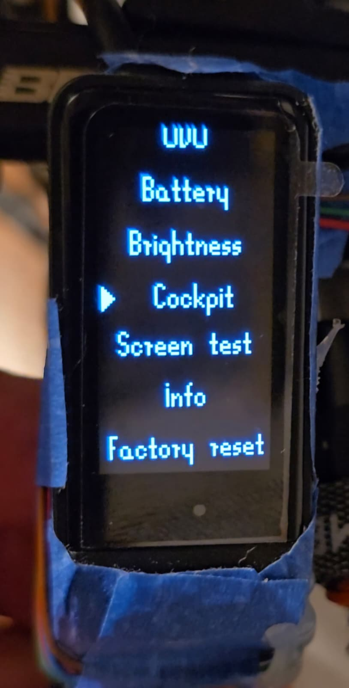
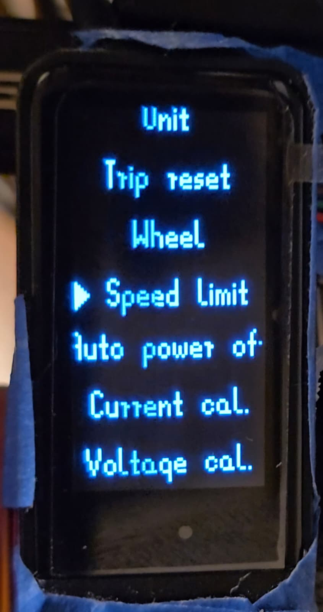

SW102 FirmwareOpen-source firmware that replaces the stock SW102 firmware entirely - a redesigned cockpit, a full settings menu, and Bluetooth OTA updates, built from scratch for genuine Bafang mid-drive controllers (BBS01/BBS02/BBSHD/M400/M420/M620).

Boot screen

Cockpit

Menu (selection)

Menu (top level)
Speaks the standard Bafang display UART protocol directly - no intermediate box, no adapter.
Update the firmware over Bluetooth after the first flash - no need to open the display again.
Optional Precise mode computes the battery percentage locally from the display's own measured voltage, for controllers whose own reporting runs inaccurate.
A real energy-use model blends your riding history with your current style into a live range estimate - not a static number.
Built on top of the community anszom/SW102_LCD fork, itself GPL-3.0 licensed.
A Rust-based emulator compiles and runs the real firmware C code on a PC, for testing layout and logic without hardware.
Runs on the display's existing Nordic nRF51822 BLE SoC - no hardware modification needed.
BBS01/BBS01B, BBS02/BBS02B, BBSHD, M400, M420, M620/G510 Ultra - the standard Bafang display protocol family.
This is firmware, not an app - it has no internet connection of any kind. It talks to the motor controller over a wired UART cable, and to a phone over Bluetooth only for firmware updates (DFU) - nothing is ever sent anywhere online.
Free and open source, for genuine Bafang mid-drive controllers. Source, install instructions, and releases on GitHub.